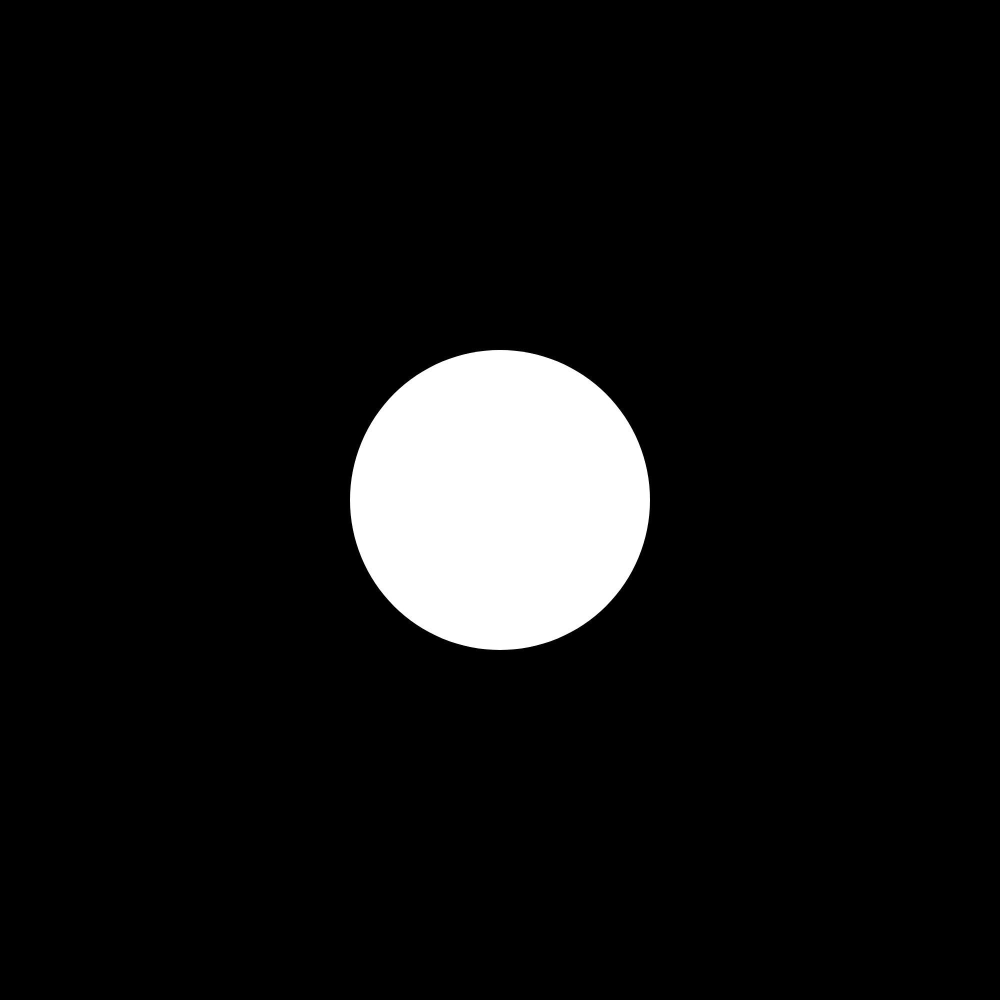

Train your brain using the exact neurobiological protocols recommended by Andrew Huberman.
Build deep concentration by anchoring your vision, avoiding digital screens, and gamifying your focus.
Draw a small dot on a physical piece of paper. Open the app, start your daily challenge, and stare at the paper dot. FocusPoint utilizes your front-facing camera to track your eyes in real-time, keeping your streak alive only as long as your focus holds.